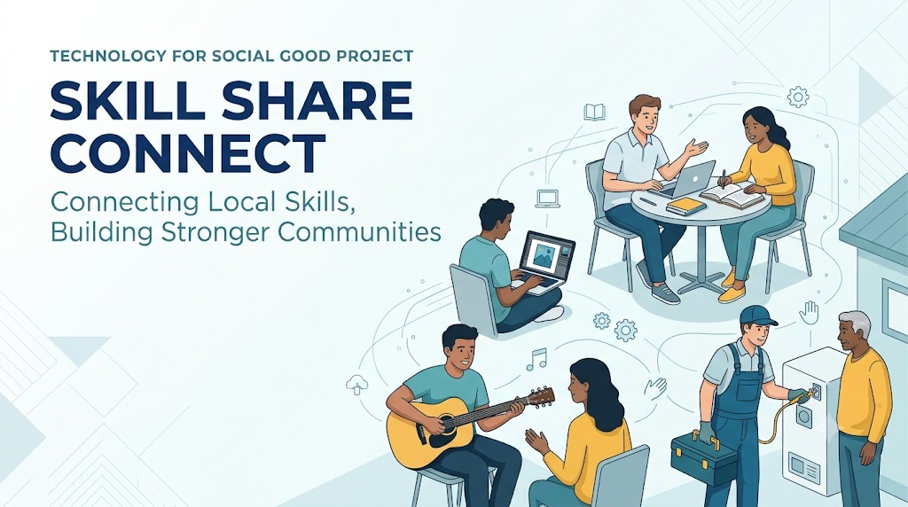

Project Name: Skill Share Connect
Focus Area: Enabling Social Good Through Technology
Tools Used: Softr, Google Sheets, Canva
Platform: Mobile-Responsive Web Application
Live Link:
View Campus Directory
(Replace # with your actual link)
1. The Problem
In many local neighborhoods and student communities—including our own Azim Premji University—there is a significant information gap regarding available human resources. While individuals possess valuable skills like subject tutoring, graphic design, music lessons, electrical repair, or plumbing services, there is no centralized, trusted platform to discover these talents locally.
People often rely on expensive professional services or inefficient word-of-mouth. This lack of visibility prevents community members from supporting one another and limits opportunities for individuals to earn supplemental income.
2. The Solution: Skill Share Connect
My project bridges this gap by providing a digital directory that promotes local economic development and community trust. I developed "Skill Share Connect" as a mobile-responsive web application that serves as a community skill registry. The application allows users to:
- Register and List Skills: Users can create a profile and categorize their expertise.
- Search and Filter: Community members can search for specific services (e.g., physics tutor or electrical repair) within their immediate area.
- Direct Contact: The app provides a simple way to connect via call or email.
The app is designed with a mobile-first approach, ensuring users with basic smartphones can access the directory easily. The initial pilot focuses on a specific housing society and campus to ensure data quality and trust.
3. Architecture & Tech Stack
To implement this project efficiently, I selected the following tools:
- Google Sheets: Acts as the primary database for storing user profiles and skill categories.
- Softr: Converts the spreadsheet data into a functional, user-friendly interface using drag-and-drop building blocks.
- Canva: Used for creating simple, accessible icons and branding elements.
Why this stack? Softr is strategically designed for directories and list-based apps. By using a simple Google Sheet as the backend, data management remains highly accessible. A non-technical community administrator can update listings without learning a complex new system, ensuring the project's long-term sustainability. Furthermore, Softr apps are natively responsive, meaning they provide a high-quality experience on any device without requiring app store downloads.
4. Building the Application: Reflections & Challenges
Design & Layout Strategy
When looking back at my initial design, I believe the Grid Card layout was the right choice. Because this is a directory, users need to see names and faces immediately to build trust. By using Tags for filtering (like Tutoring or Music), the app feels intuitive and fast. A simple text list would have been too boring; the visual cards make the community feel alive and connected, perfectly fitting the "Social Good" theme.
Technical Challenges Overcome
The biggest hurdle during development was configuring the Action buttons. I initially struggled to make the WhatsApp button dynamic. Through trial and error, I realized I needed to map the URL specifically to the contact number column in the database so that each card would trigger a different chat.
Another challenge involved visibility settings. I was confused when the incognito link asked for a login, but I learned how to adjust user permissions to make the app fully public. These challenges taught me that building an app is not just about frontend design; it is about managing how data flows between the backend and the frontend.
Future Roadmap
I was highly satisfied with the final pilot version. Moving from a messy Google Sheet to a professional interface that successfully displays twenty different student experts felt like a major win. If I had more time, I would add a Rating System so students could leave reviews, and a User Submission Form so neighbors could add their own skills directly without me having to update the spreadsheet manually.